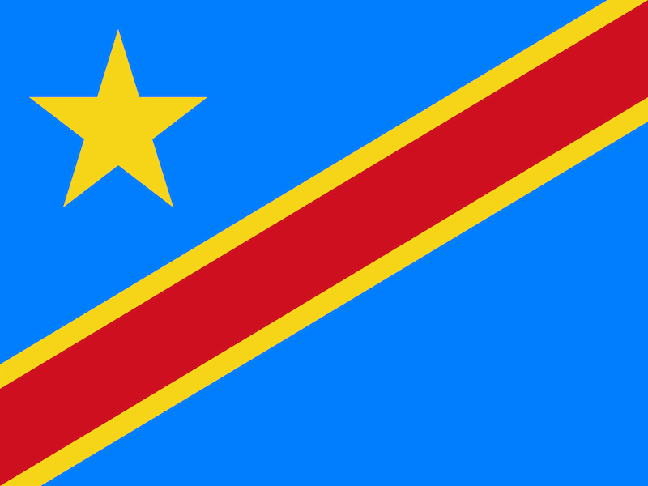

Joe Kabusako Iviti
About Me
I'm Joe Kabusako Iviti.I am a student in WDD 131, learning about dynamic web fundamentals right here from DR Congo through Byupathway worldwide. I'm originally a congolese born here.
The Democratic Republic of the Congo (DRC), located in the heart of Central Africa, is the second-largest country on the continent. Renowned for its unparalleled biodiversity, it shelters the vast Congo Basin rainforest, which serves as one of the world's most critical ecological lungs alongside rich wildlife and majestic river systems.
